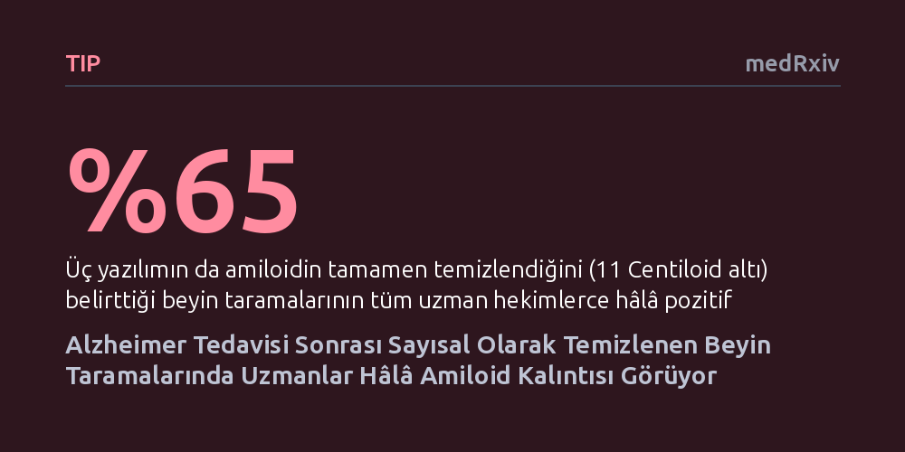

TIP · medRxiv · 2026-10-08
Araştırmacılar, yeni nesil Alzheimer ilaçlarının beyindeki amiloid plaklarını temizleme başarısını sayısal algoritmalar ve uzman hekimlerin görsel okumalarıyla karşılaştırdı. Bilgisayar analizlerinin tamamen temizlendiğini gösterdiği beyin taramalarının yüzde 65'inde uzman hekimler belirgin amiloid kalıntıları tespit etti.
Alzheimer tedavisini sonlandırma kararında yalnızca otomatik bilgisayar skorlarına güvenmenin tedaviyi erkenden kesme riski yaratabileceğini gösteriyor.

Alzheimer hastalığının erken evrelerinde beyinde biriken amiloid plaklarını hedef alan lekanemab ve donanemab gibi yeni nesil antikor tedavileri, klinik uygulamada yer edinmeye başladı. Bu tedaviler beyindeki amiloid yükünü azaltarak hastaların bilişsel gerilemesini yavaşlatmayı amaçlıyor. Ancak bu ilaçlar yaygınlaştıkça hekimlerin karşısına kritik bir soru çıkıyor: Tedavinin amacına ulaştığını ve hastanın beynindeki plakların gerçekten temizlendiğini nasıl belirleyeceğiz?
Tedaviye yanıtı izlemek için pozitron emisyon tomografisi (PET) görüntülemelerinden faydalanılıyor. Son yıllarda PET sonuçlarını nesnel kılmak amacıyla "Centiloid" adı verilen standart bir sayısal ölçek geliştirildi. Bu ölçekte sıfır değeri amiloidsiz sağlıklı genç bir beyni, yüz değeri ise tipik bir Alzheimer hastasını temsil ediyor. Belirli bir sayısal sınırın, özellikle de 11 Centiloid seviyesinin altına inildiğinde, plakların temizlendiği kabul edilerek tedavinin durdurulması planlanabiliyor.
Ne var ki sayısal bir skorun temiz çıkmasıyla hekimin filmde gördüğü biyolojik gerçekliğin aynı olup olmadığı henüz net değildi. Eğer bir bilgisayar algoritması plakların temizlendiğini rapor ederken uzman bir hekim beyinde hâlâ plak kalıntıları görüyorsa, tedaviyi vaktinden önce kesmek hastanın aleyhine sonuçlar doğurabilir. Bu araştırma, sayısal yazılım analizleri ile uzman gözünün ne kadar uyuştuğunu doğrudan sınamak için yola çıktı.
Araştırma ekibi, lekanemab veya donanemab tedavisi alan 101 hastadan toplanan florbetapir veya florbetaben PET taramalarını inceledi. İncelenen hasta grubunun yaş ortalaması 74 olup, yüzde 57'si kadınlardan ve yüzde 78'i hafif bilişsel bozukluk evresindeki bireylerden oluşuyordu. Toplamda tedavi öncesine ait 88 tarama ve ortalama 17 aylık tedavi sürecinin ardından çekilen 54 tarama değerlendirmeye alındı; bu taramaların 41'i aynı hastanın tedavi öncesi ve sonrasını içeren eşleşmiş kayıtlar içeriyordu.
Beyindeki amiloid miktarını belirlemek amacıyla biri Amerikan Gıda ve İlaç Dairesi (FDA) onaylı MIMneuro olmak üzere üç farklı sayısal analiz yazılımı (MIMneuro, rPOP ve CapAIBL) kullanıldı. Bu yazılımların ürettiği Centiloid değerleri ve yıllık plak temizleme hızları hesaplandı. Eş zamanlı olarak, üç deneyimli nükleer tıp uzmanı sayısal sonuçlardan tamamen habersiz bir şekilde taramaları görsel olarak inceledi ve amiloid varlığını bağımsız olarak değerlendirdi. Tam temizlik kriteri sayısal tarafta 11 Centiloid altı, görsel tarafta ise uzmanların ortak negatif kararı olarak tanımlandı.
Analiz sonuçları, yazılımların kendi aralarındaki tutarlılığın hem tedavi öncesinde hem de sonrasında oldukça yüksek olduğunu gösterdi; algoritmalar arası uyum katsayısı her iki dönemde de 0,90 çıktı. İlaçların plak temizleme hızları da önceki klinik deneylerle uyumluydu: Donanemab yılda yaklaşık 60 ila 62 Centiloid temizlik sağlarken, lekanemab ile bu oran yılda 36 ila 38 Centiloid seviyesinde gerçekleşti.
Ancak tedavi sonrasında amiloidin tamamen temizlenip temizlenmediğine bakıldığında, yazılımlar ile uzman hekimler arasında belirgin bir uyumsuzluk ortaya çıktı. Tedavi sonrası 54 taramanın yüzde 37'si (20 tarama) her üç yazılım tarafından da 11 Centiloid'in altında, yani "temizlenmiş" olarak değerlendirildi. Buna karşılık, üç uzmanın oy birliğiyle negatif kabul ettiği tarama oranı yalnızca yüzde 7'de (4 tarama) kaldı. Bireysel okuyucular bazında dahi negatif oranı sadece yüzde 11 ile yüzde 19 arasında seyretti.
En çarpıcı bulgu ise, her üç yazılımın birden temizlendiğini bildirdiği 20 taramanın yüzde 65'inin (13 tarama) uzman hekimlerin tamamı tarafından hâlâ pozitif olarak değerlendirilmesiydi. Uzmanlar, bilgisayarın temiz dediği bu beyinlerde özellikle arka bölgede (oksipital korteks) belirgin amiloid kalıntıları saptadı. Otomatik yazılımlar beynin genel ortalamasını alarak skoru sıfırlarken, uzman gözü bölgesel plak odaklarını yakalamayı başardı.
Bu sonuçlar, Alzheimer tedavisinde amiloid plaklarının temizlendiği hükmüne varırken yalnızca genel bir sayısal skora dayanmanın hekimleri yanıltabileceğini gösteriyor. Yazılımların ürettiği Centiloid değerleri genel gidişatı ve ilaçların biyolojik etkisini izlemek açısından güvenilir bir zemin sunsa da, hastanın tedavisini kesme aşamasında tek başına yeterli bir ölçüt olmayabilir.
Bunun temel nedeni, mevcut algoritmaların beynin tamamından ortalama alarak tek bir skor üretmesidir. Beynin geniş alanlarında plaklar temizlendiğinde genel skor 11 Centiloid'in altına inebilmekte, ancak oksipital lob gibi belirli bölgelerde kalan plak odakları gözden kaçabilmektedir. Araştırmacılar, tedavi sonrası Centiloid skorlarının çok daha temkinli yorumlanması gerektiğini, klinik kararlarda hem bölgesel incelemelerin hem de uzman hekimlerin görsel değerlendirmelerinin dikkate alınmasının şart olduğunu vurguluyor.